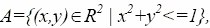
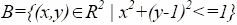
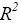
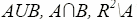
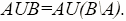

Теория множеств: примеры решений задач
На этой странице вы найдете готовые примеры по базовому разделу дискретной математики: элементам теории множеств. Типовые задачи снабжены подробным решением, формулами и пояснениями. Используйте их, чтобы научиться решать подобные задачи.
Основные темы (множества): задание множеств, действия с множествами (пересечение, объединение, разность, дополнение); формула включений-исключений и её применение; декартово произведение множеств, мощность множества, построение диаграмм Эйлера-Венна.
Задачи с решениями о множествах онлайн
Задача 1. Начертите фигуры, изображающие множества  , где  – вещественная плоскость. Какие фигуры изображают множества ?
Задача 2. Докажите тождество .
Задача 3. Установите взаимно однозначное соответствие между всеми прямыми на плоскости и всеми точками координатной оси Ox.
Задача 4. М – подмножество натуральных чисел. 10 элементов M – простые числа, остальные кратны 2, 3 или 5. Определите мощность M, если оно содержит: 70 чисел, кратных 2; 60 чисел, кратных 3; 80 чисел, кратных 5; 98 чисел, кратных 2 или 3; 95 чисел, кратных 2 или 5; 102 числа, кратных 3 или 5; 20 чисел, кратных 30.
Задача 5. Проверьте тождества или включения, используя алгебру множеств и диаграммы Эйлера-Венна.
Задача 6. Запишите множества A, B, C перечислением их элементов и найдите …, если:
A – корни уравнения x²–12x–28=0;
B – делители числа 28;
C – нечётные X, 0 ≤ X ≤ 7.
Задача 7. Универсальное U={1,2,3,4,5,6,7,8}, X={1,3,6,7}, Y={3,4,7,8}, Z={3,4,7,8}. Запишите булеан X, выберите разбиение Y и покрытие Z. Выполните (X \ Y) ∩ Z̅.
Задача 8. 14 спортсменов участвовали в кроссе, 16 – в плавании, 10 – в велогонках. 8 – кросс и плавание, 4 – кросс и велогонки, 9 – плавание и велогонки. В трёх – три человека. Сколько всего спортсменов?
Задача 9. В (P({a,b,c}), ⊆) укажите минимальные и максимальные элементы; найдите наибольший и наименьший, если они есть, или докажите их отсутствие.
Задача 10. В продукте могут быть примеси {a,b,c,d}. Постройте B(M) – множество всех подмножеств M. Дайте интерпретацию: что означает каждый элемент и несобственные подмножества?